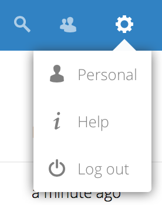

Как пользователь, вы можете управлять своими Персональными настройками.
Чтобы получить доступ к вашим Персональным настройкам:
Нажмите на изображение вашего профиля в верхнем правом углу Nextcloud.
The Personal Settings Menu opens:

Меню Персональных настроек
Choose Settings from the drop down menu:
Примечание
Если вы являетесь администратором, вы также можете управлять пользователями и администрировать сервер. Эти ссылки не отображаются для пользователя без прав администратора.
Параметры, перечисленные на странице личных настроек, зависят от приложений, которые включены администратором. Некоторые из функций, которые вы увидите, включают в себя следующее:
Процент использования и доступная квота
Управление изображением вашего профиля
Полное имя (может не совпадать с вашим именем для входа в Nextcloud, которое уникально и не может быть изменено)
Адрес электронной почты
Список групп, членом которых вы являетесь
Смена пароля (не используется в случае централизованной аутентификации пользователей)
Папка по умолчанию для сохранения новых документов в
Ваш федеративный идентификатор доступа
Ссылки на социальные сети
Версия Nextcloud
Примечание
Доступные параметры и настройки в зависимости от конфигурации ваших администраторов. Если вы не можете изменить пароль или отображаемое имя в своих личных настройках, обратитесь за помощью к администратору.